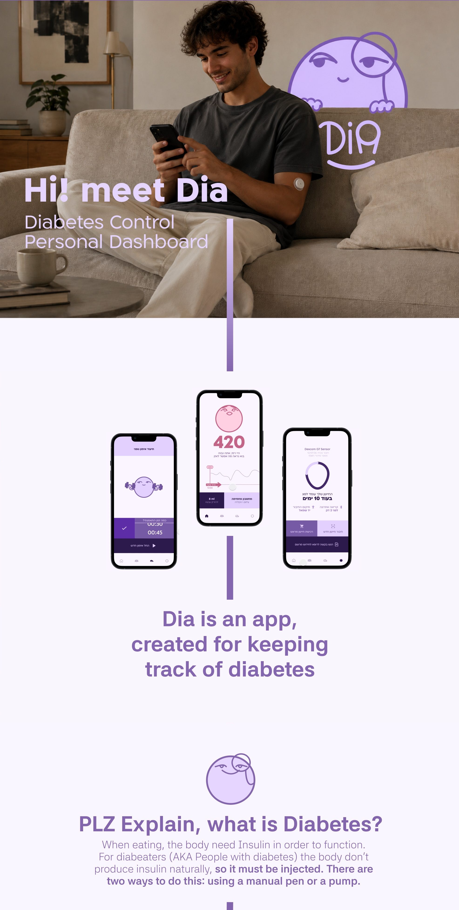
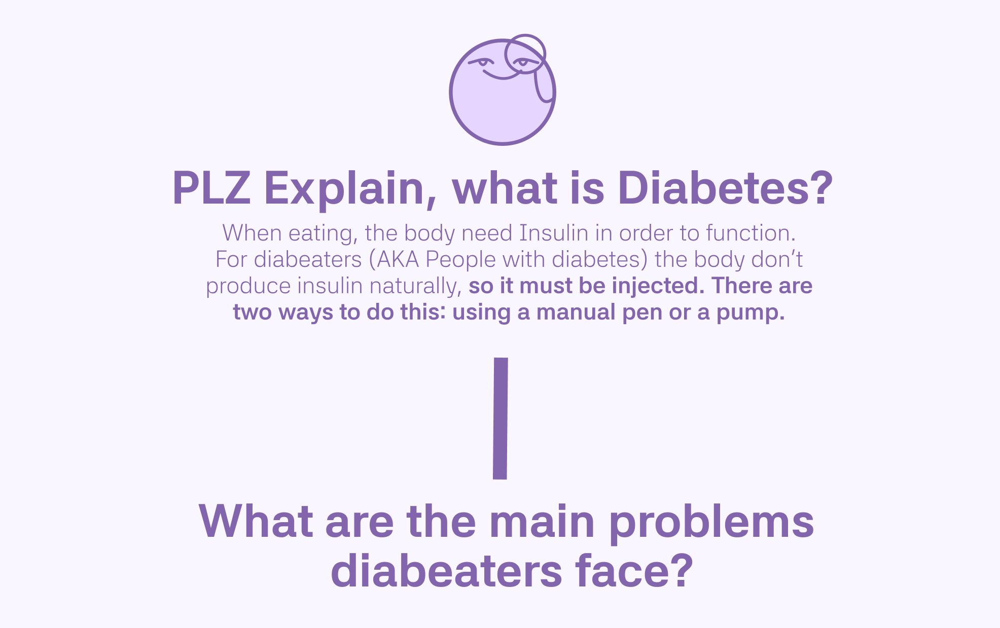

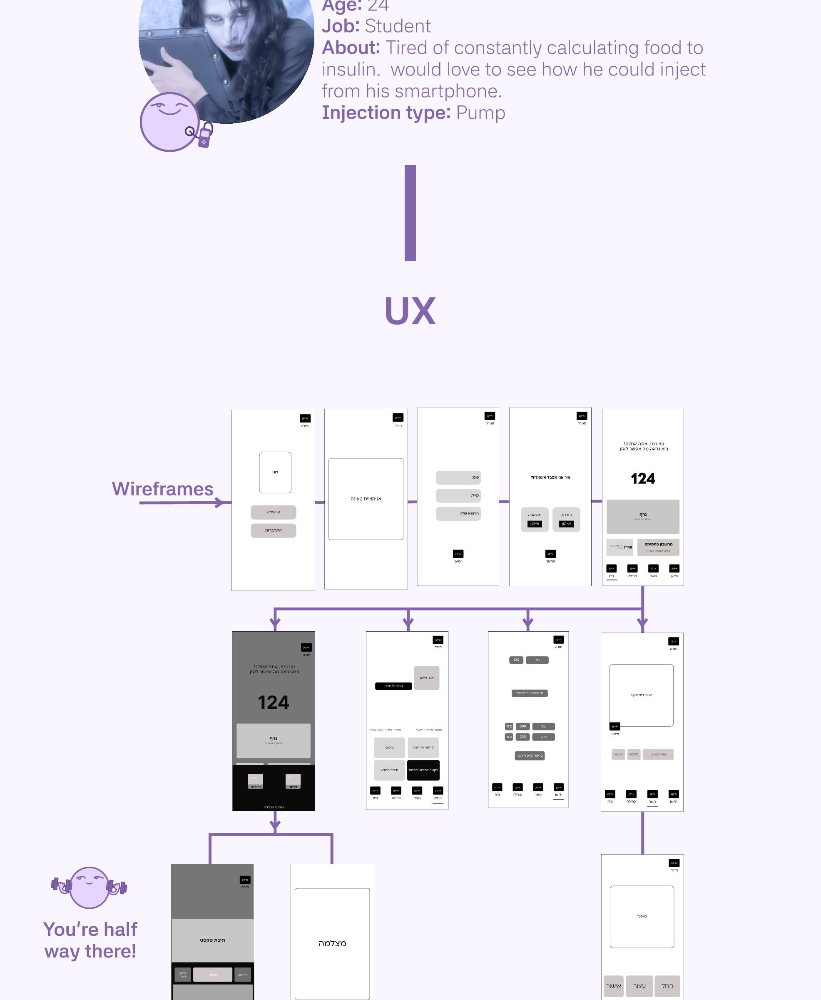
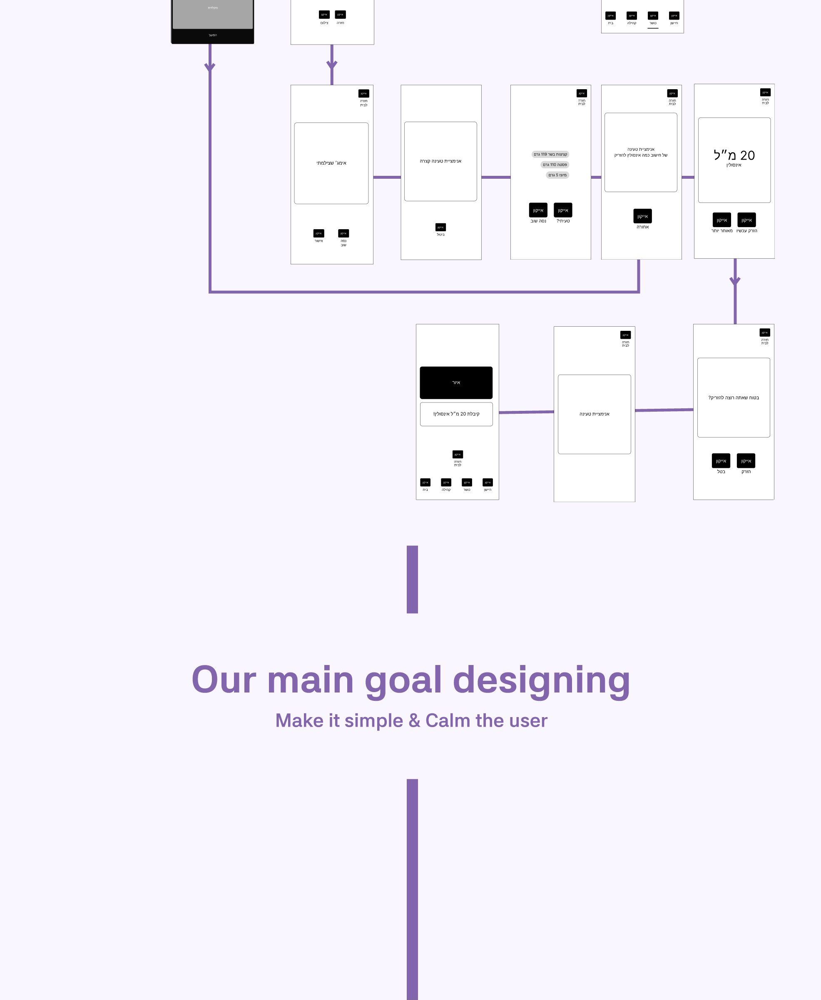
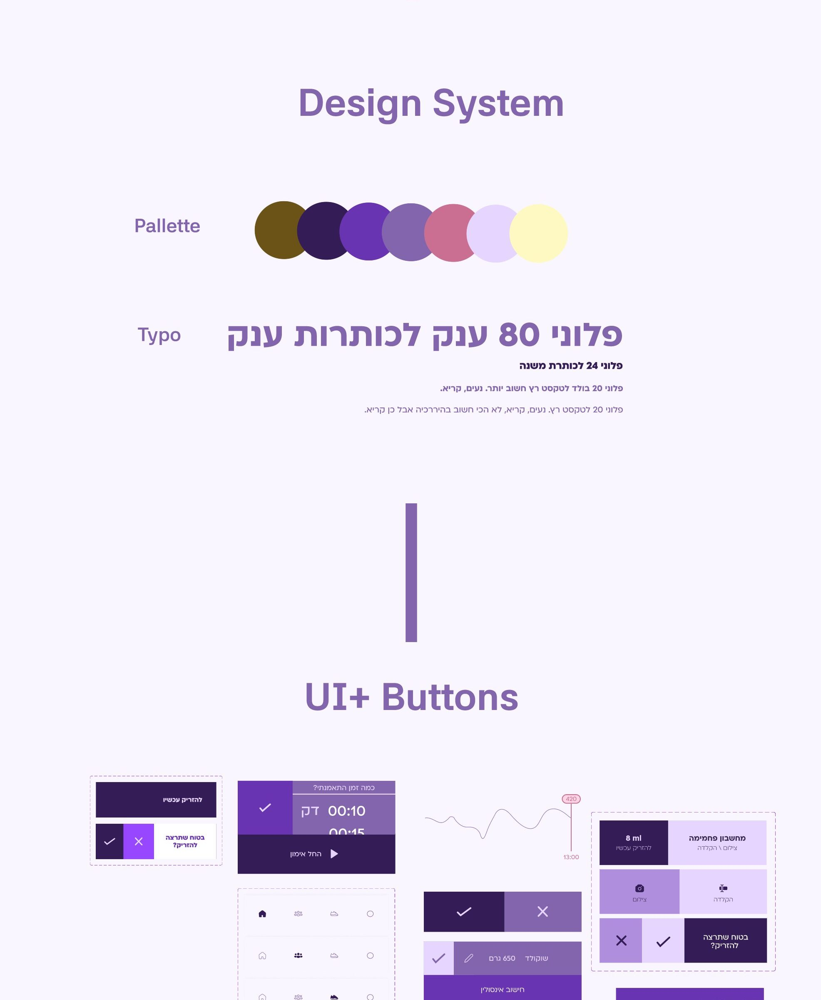
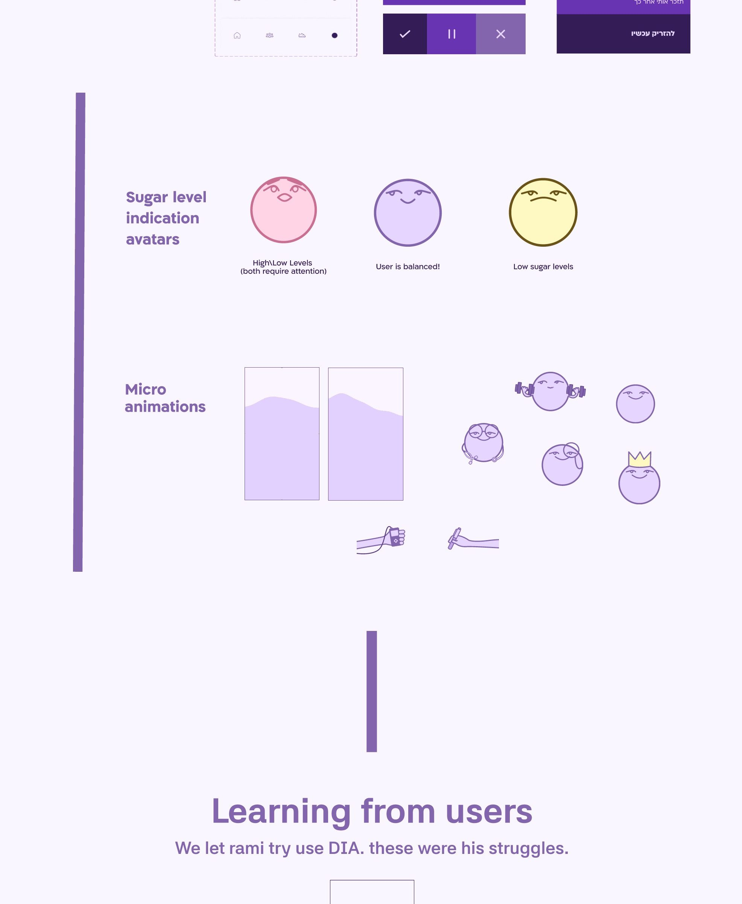
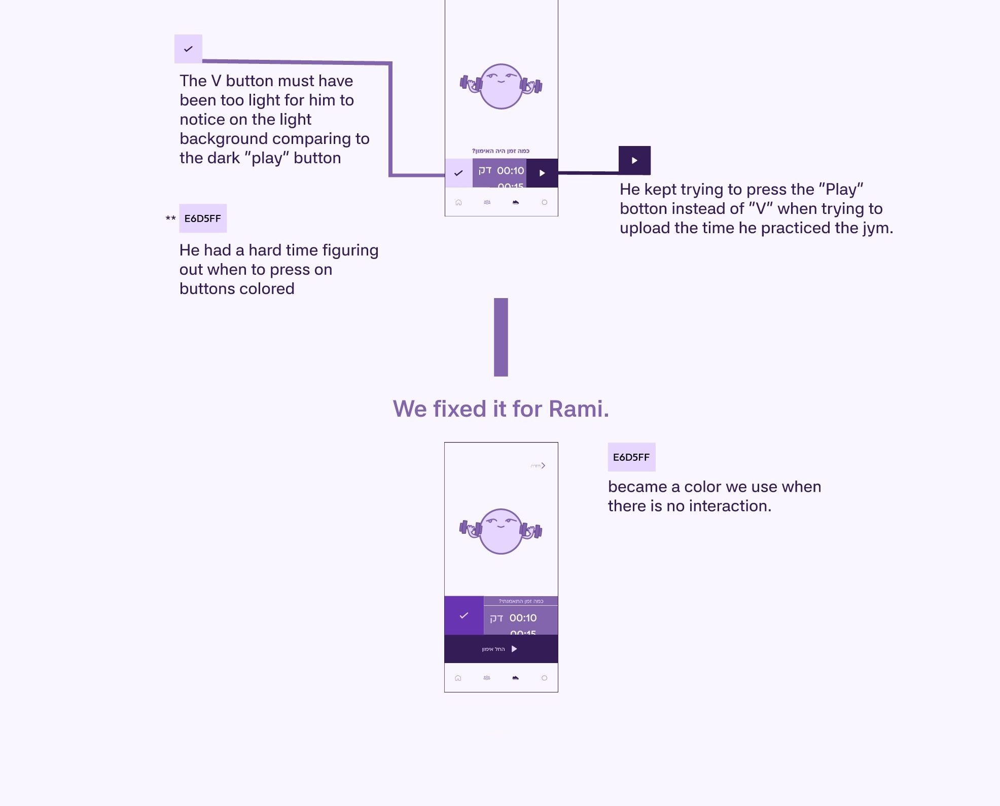

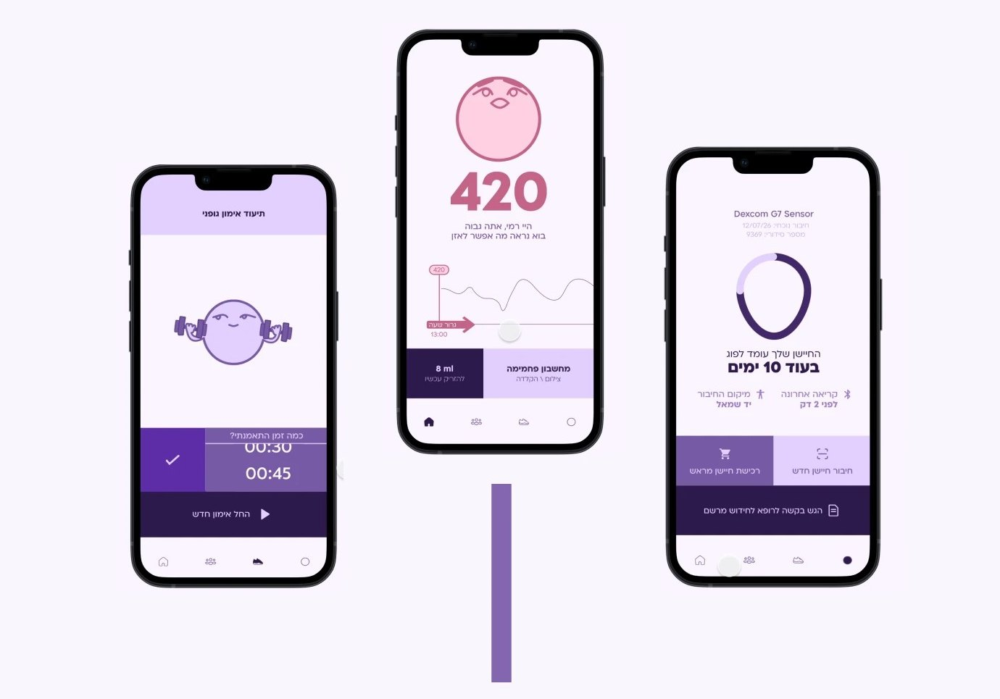
Dia is an app,
created for keeping track of diabetes
PLZ Explain, what is Diabetes?
When eating, the body need Insulin in order to function.
For diabeaters (AKA People with diabetes) the body don't produce insulin naturally, so it must be injected. There are two ways to do this: using a manual pen or a pump.
What are the main problems diabeaters face?
- Not knowing how much insulin to inject. They must calculate all time how much calories they’ve eaten & calculate Insulin mg|dl to inject.
- Being active changes the amount of Insulin to inject too!
- Monitoring Hourly to make sure they are as balanced as possible
So, What did we do?
An app, that makes controlling diabetes easier!
Why choose Dia?
Inject directly from your smartphone.
Calculates the exact MG|DL of insulin in need to inject
Tracks blood sugar levels throughout the entire day.
Connects with the body sensor known as Dexcom
Persona’s
Name: Rami
Age: 60
Job: Mechanical Engineer
About: He enjoys sports and maintains a healthy diet, but his main struggle with diabetes is understanding how physical activity affects his insulin levels.
Injection type: Manual
Name: Adam
Age: 24
Job: Student
About: Tired of constantly calculating food to insulin. would love to see how he could inject from his smartphone.
Injection type: Pump
UX
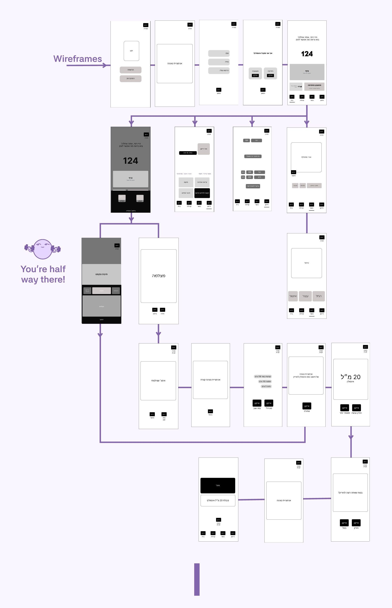
Our main goal designing
Make it simple & Calm the user
Design System
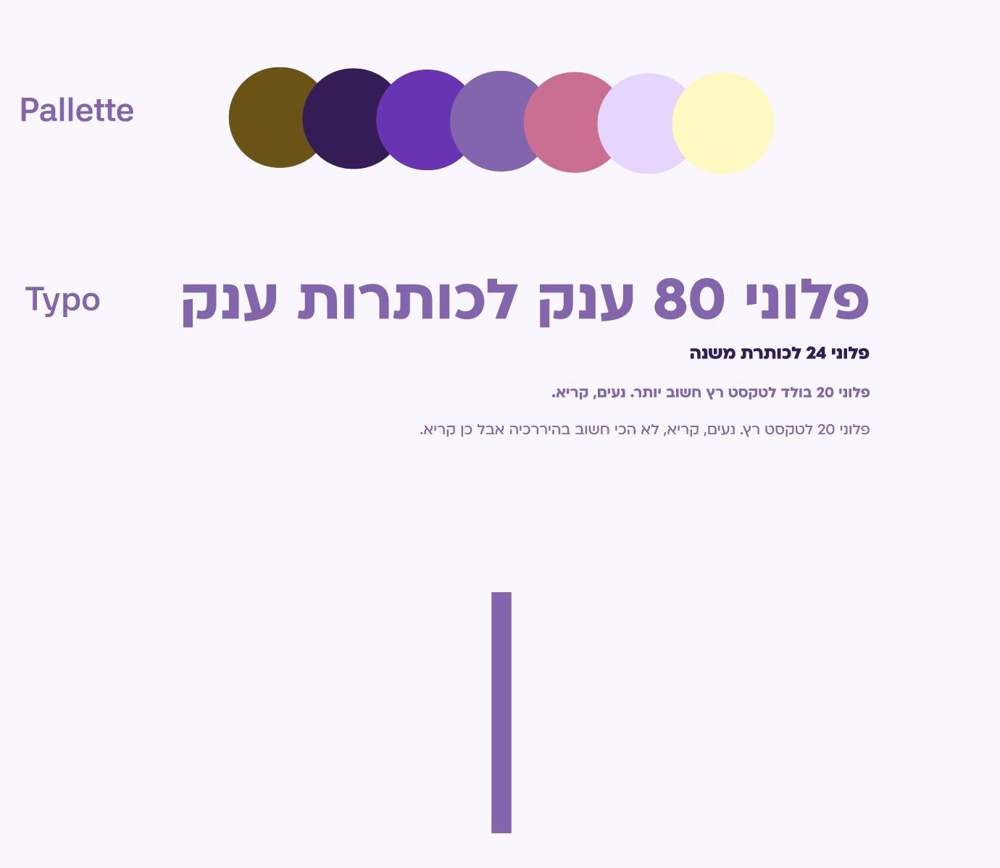
UI+ Buttons
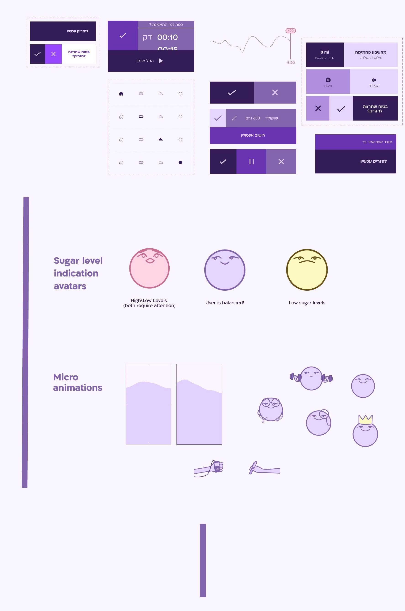
Learning from users
We let rami try use DIA. these were his struggles.
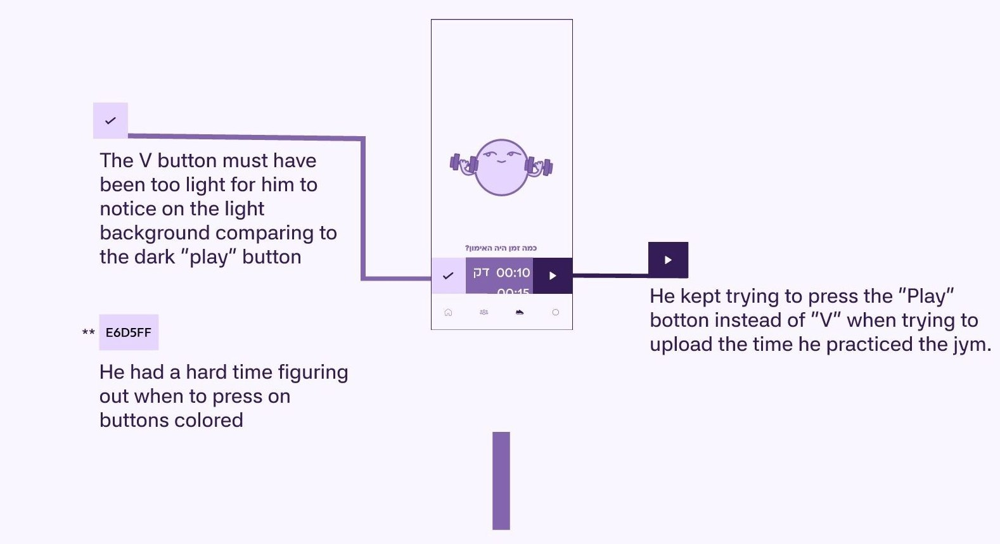
We fixed it for Rami.
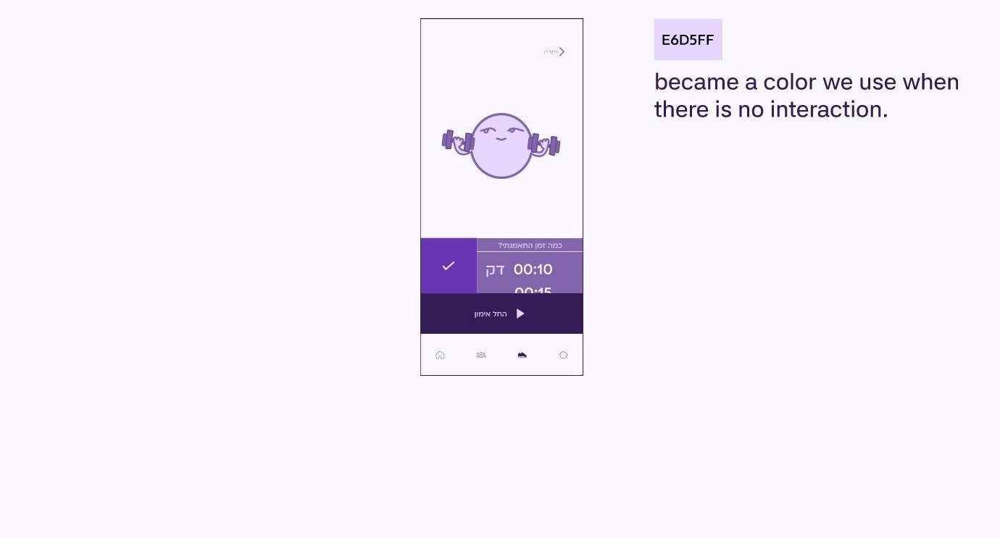